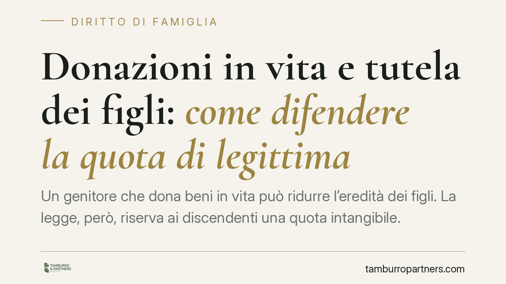

Donazioni in vita e tutela dei figli: come difendere la quota di legittima
Un genitore che dona beni in vita può ridurre l'eredità dei figli. La legge, però, riserva ai discendenti una quota intangibile. Quando le donazioni la intaccano, i legittimari dispongono di strumenti precisi per recuperarla, purché li attivino nei tempi e nella sequenza corretti. Vediamo quali sono e come funzionano.

Il problema: donare oggi, ridurre l'eredità di domani
La donazione è un atto pienamente lecito. Chi possiede un bene può disporne come crede, anche a favore di un solo figlio o di un estraneo. Il limite arriva alla morte del donante: la legge riserva ad alcuni familiari — i cosiddetti legittimari — una quota di patrimonio che non può essere sottratta con donazioni o testamento.
Sono legittimari il coniuge, i figli e, in mancanza di figli, gli ascendenti (genitori e nonni). Quando concorrono più categorie, le quote si combinano: ad esempio il coniuge concorre sia con i figli sia, in loro assenza, con gli ascendenti, secondo le proporzioni fissate dagli artt. 536 e seguenti del codice civile.
Come si calcola la quota riservata
Per capire se una donazione è lesiva occorre ricostruire il patrimonio del defunto attraverso la riunione fittizia (art. 556 c.c.). Si tratta di un'operazione contabile: si sommano i beni presenti alla morte, si sottraggono i debiti e si aggiunge — solo sulla carta — il valore dei beni donati in vita.
Su questa massa si calcola la quota di riserva spettante ai legittimari. Se ciò che il legittimario ha ricevuto è inferiore a quanto gli spetta, la sua quota è stata lesa e può agire.
I tre livelli di intervento
Gli strumenti di tutela seguono una sequenza precisa. Non sono alternativi liberamente: vanno azionati nell'ordine previsto dalla legge.
1. L'azione di riduzione (artt. 553 e seguenti c.c.). È il rimedio principale. Il legittimario chiede al giudice di dichiarare inefficaci, per la parte eccedente, le donazioni e le disposizioni testamentarie che ledono la sua quota. Si riducono prima le disposizioni testamentarie, poi le donazioni partendo dalla più recente. L'azione si prescrive in dieci anni dall'apertura della successione.
2. La restituzione contro il donatario (artt. 561-562 c.c.). Vinta la riduzione, il legittimario può chiedere al donatario la restituzione del bene, libero da ipoteche e pesi. Se il bene non è più nel patrimonio del donatario o non è restituibile in natura, subentra un obbligo di compensazione in denaro.
3. La restituzione contro i terzi acquirenti (art. 563 c.c.). Se il donatario ha nel frattempo venduto il bene, il legittimario può agire contro chi lo ha acquistato. Attenzione: questa azione è subordinata alla preventiva escussione del donatario. Occorre cioè aver prima aggredito senza successo il patrimonio di chi ha ricevuto la donazione. Solo se questa via risulta infruttuosa si può rivolgere la pretesa al terzo.
L'opposizione stragiudiziale alla donazione
Esiste uno strumento preventivo poco conosciuto: l'opposizione alla donazione prevista dall'art. 563, comma 4, c.c. Il coniuge e i parenti in linea retta del donante possono notificare e trascrivere un atto di opposizione, che sospende il decorso del termine ventennale entro cui l'azione di restituzione può colpire i terzi.
Decorsi vent'anni dalla trascrizione della donazione senza opposizione, infatti, il bene diventa "sicuro" per il terzo acquirente: la restituzione non è più esercitabile nei suoi confronti. L'opposizione, rinnovabile, evita questo effetto e mantiene aggredibile l'acquisto del terzo.
Cosa cambia per chi teme una donazione lesiva
Finché il donante è in vita, il legittimario non può agire in riduzione: la lesione si verifica solo all'apertura della successione. Ha però a disposizione lo strumento preventivo dell'opposizione, utile soprattutto quando il bene donato è già stato o rischia di essere rivenduto a terzi.
La giurisprudenza di merito ha più volte confermato la centralità della corretta sequenza tra riduzione, restituzione verso il donatario e azione verso i terzi: saltare un passaggio espone al rigetto della domanda.
Cosa fare in concreto
- Ricostruite il patrimonio del donante raccogliendo atti di donazione, visure catastali e trascrizioni: senza questi dati la riunione fittizia è impossibile.
- Verificate la data di trascrizione di ogni donazione, per calcolare il termine ventennale rilevante ai fini dell'azione contro i terzi.
- Valutate l'opposizione ex art. 563 c.c. se il donante è ancora in vita e il bene rischia di essere ceduto a estranei.
- Rispettate la sequenza riduzione, restituzione dal donatario, restituzione dal terzo: agire fuori ordine compromette la tutela.
- Rivolgetevi a un professionista prima che maturino i termini di prescrizione o di decadenza: molte pretese si perdono per inerzia.
---
Contributo informativo a cura di Tamburro & Partners - Avv. Giuseppe Tamburro. Non costituisce parere legale.
Ogni famiglia ha il suo equilibrio.
Separazione, divorzio, affidamento, assegno: se vuoi un confronto riservato su una specifica situazione, scrivi allo studio. Ti rispondiamo entro un giorno lavorativo.